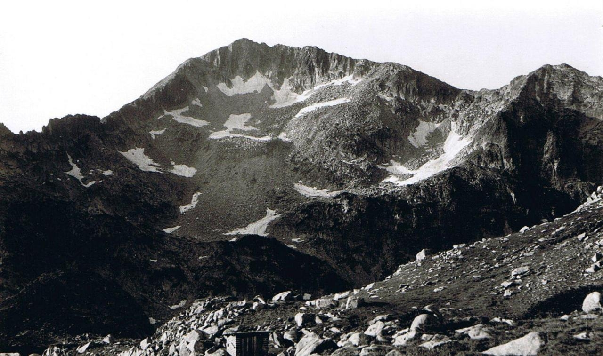
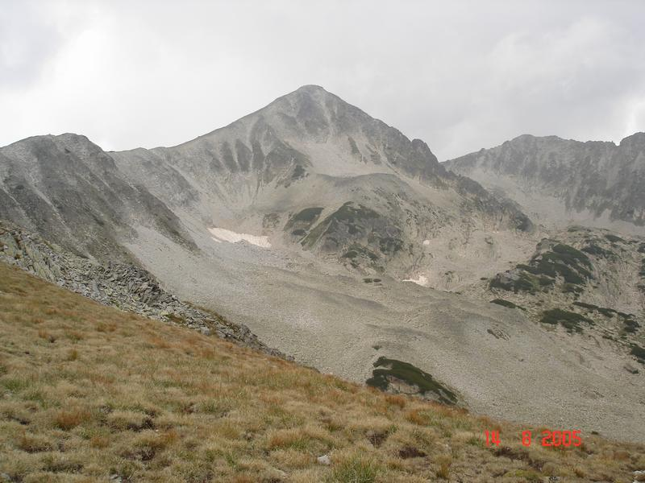
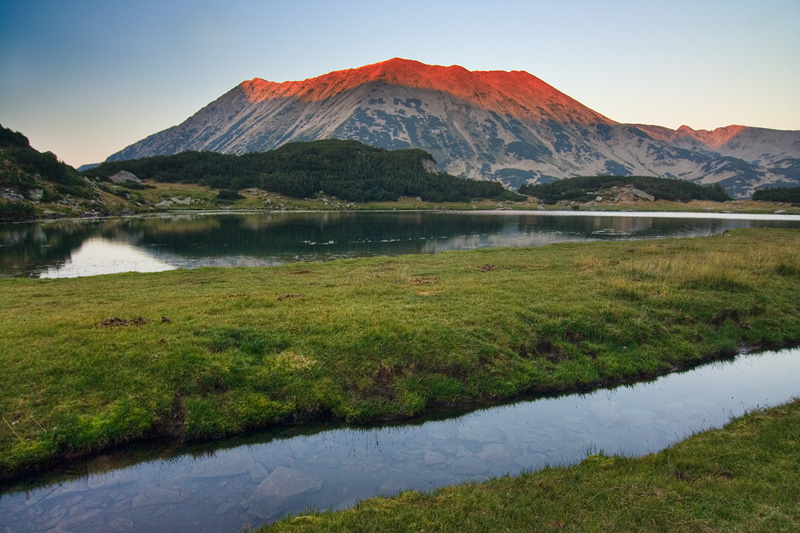
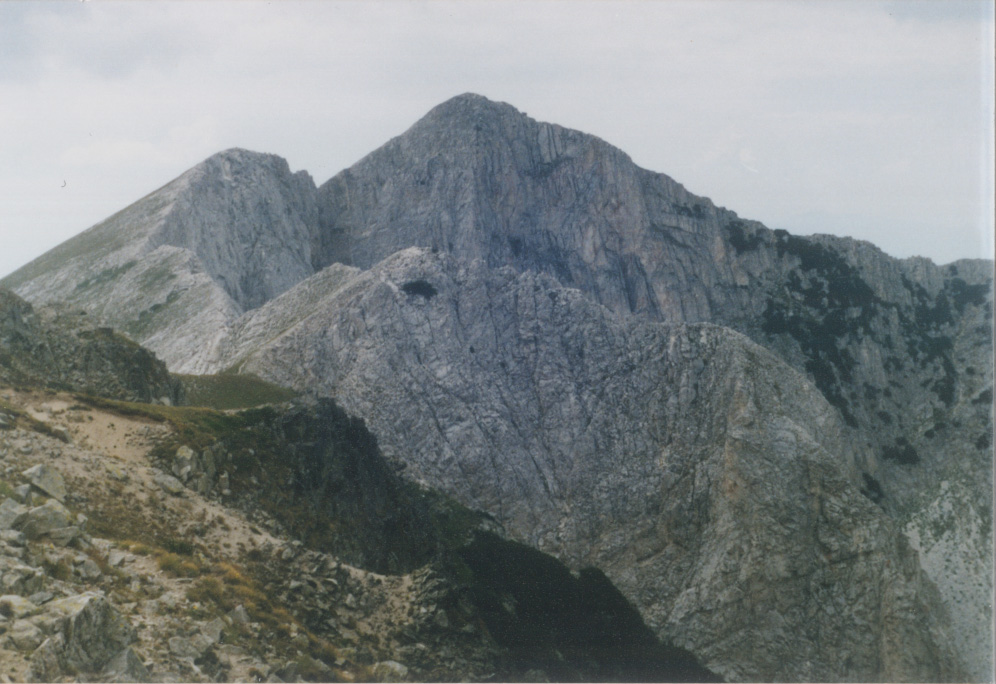
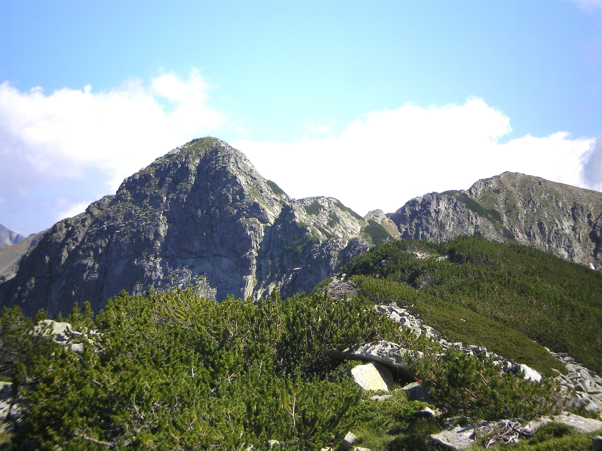

     В Пирин има два върха над 2900 м (Вихрен и Кутело), седем над 2800 м, седемнадесет над 2700 м, 32 над 2600 м и 40 над 2500 м. Трите най-високи върха са мраморни, а най-високите гранитни върхове (Полежан и Каменица) се намират на страничните била. Най-високият гранитен връх на главното било е Бъндеришкият чукар - 2732 м.
| Връх | Височина [м] | Било |
|---|---|---|
| Вихрен | 2914 | Главно |
| Кутело | 2908 | Главно |
| Бански суходол | 2884 | Главно |
| Голям Полежан | 2851 | Полежанско |
| Каменица | 2822 | Каменишко |
| Малък Полежан | 2822 | Полежанско |
| Баюви дупки | 2820 | Главно |
| Голяма стража | 2800 | Полежанско |
| Малка стража | 2790 | Полежанско |
| Яловарника | 2763 | Каменишко |
| Газей | 2761 | Полежанско |
| Каймакчал | 2753 | Полежанско |
| Голяма Тодорка | 2746 | Тодорино |
| Бъндеришки чукар | 2732 | Главно |
| Джангал | 2730 | Полежанско |
| Момин двор | 2723 | Главно |
| Котешки чал | 2715 | - |
| Малка Тодорка | 2712 | Тодорино |
| Ченгелчал | 2709 | Главно |
| Дисилица | 2700 | Полежанско |
| Каменишка кукла | 2690 | Каменишко |
| Куклите | 2686 | Каменишко |
| Башлийски чукар | 2670 | - |
| Муратов връх | 2669 | Главно |
| Джано | 2668 | Главно |
| Безбог | 2645 | Полежанско |
| Сиврия | 2593 | - |
| Синаница | 2516 | Синанишко |